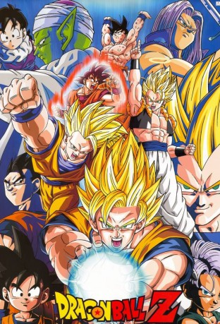

")
Alternativ: Dragon Ball Z Kai (Englischer Titel)
 
 IMDB-Wertung: 8.4 / 10
IMDB-Wertung: 8.4 / 10  Metascore:
Metascore: 
Dragonball Kai ist eine "aufgefrischte" Version der alten Dragonball Z-Folgen, die am 5. April 2009 um 9:00 auf dem japanischen Fernsehsender Fuji TV ihre Premiere feierte. Zu den Änderungen der als "Akira Toriyama Original Cut" beworbenen Serie gehören der Wegfall der meisten Filler-Szenen, neu aufgenommene Dialoge, neue Musik, erneuerte Sound-Effekte und neue digitale Effekte. Die Handlung der Neufassung beginnt mit Inhalten aus dem Fernsehspecial, das in Deutschland auf DVD unter dem Titel "Das Bardock Special" erschien. Es zeigt die Vorgeschichte um die Vernichtung der Saiyajin durch Freezer und enthält zur Einleitung auch Footages aus der ersten Fernsehserie, ehe die eigentliche Handlung zum gleichen Zeitpunkt wie im Original einsetzt.
Jahr: 2009
Dauer: 23 Minuten
FSK: 12
Land: Japan Studio: 4 Kids EntertainmentTonspuren: DD2.0 - ,
Untertitel: Deutsch,
Auflösung: 720p (1280x720) Größe: 528 MB
Genre: Action, Sci-Fi, Komödie, Abenteuer, Fantasy, Animation/Trick, TV-Serie
Regisseur: Osamu Kasai, Yasuhiro Nowatari, Daisuke Nishio, Kazuhisa Takenouchi
Drehbuch: Anaïs Nin
Soundtrack:
Darsteller:
 Sean Schemmel als Goku
Sean Schemmel als Goku Christopher Sabat als Vegeta
Christopher Sabat als Vegeta Sonny Strait als Krillin
Sonny Strait als Krillin Monica Rial als Bulma
Monica Rial als Bulma Eric Vale als Trunks
Eric Vale als Trunks Chris Ayres als Frieza
Chris Ayres als Frieza Brina Palencia als Chiaotzu
Brina Palencia als Chiaotzu Dameon Clarke als Cell
Dameon Clarke als Cell Kyle Hebert als Ox King
Kyle Hebert als Ox King Mark Stoddard als Dr. Briefs
Mark Stoddard als Dr. Briefs Bryan Massey als Oolong
Bryan Massey als Oolong Bill Jenkins als Grand Elder Guru
Bill Jenkins als Grand Elder Guru Jason Liebrecht als Jeice
Jason Liebrecht als Jeice Laura Bailey als Trunks
Laura Bailey als Trunks Jason Douglas als Additional Voices
Jason Douglas als Additional Voices Vic Mignogna als Burter
Vic Mignogna als Burter Cherami Leigh als Additional Voices
Cherami Leigh als Additional Voices Todd Haberkorn als Android 19
Todd Haberkorn als Android 19 Charles Campbell als Additional Voices
Charles Campbell als Additional Voices Masako Nozawa als Son Gohan
Masako Nozawa als Son Gohan Jôji Yanami als Narration
Jôji Yanami als Narration Mayumi Tanaka als Kuririn
Mayumi Tanaka als Kuririn Colleen Clinkenbeard als Gohan
Colleen Clinkenbeard als Gohan Takeshi Kusao als Trunks
Takeshi Kusao als Trunks Tôru Furuya als Yamcha
Tôru Furuya als Yamcha Hikaru Midorikawa als Tenshinhan
Hikaru Midorikawa als Tenshinhan Naoko Watanabe als Chichi
Naoko Watanabe als Chichi John Burgmeier als Tien
John Burgmeier als Tien Mike McFarland als Master Roshi
Mike McFarland als Master Roshi Unshô Ishizuka als Mr. Satan
Unshô Ishizuka als Mr. Satan Cynthia Cranz als Chi-Chi
Cynthia Cranz als Chi-Chi Chris Cason als Mr. Popo
Chris Cason als Mr. Popo Miki Itô als Android No.18
Miki Itô als Android No.18Datei: X:\Kinder Anime\Dragonball Z Kai\Dragonball Z Kai E001 Der Kampf beginnt.mkv seit 18.02.2017
Festplatte: Kinder-Filme+Trick
 Alle Filme aus Gruppe 'Kinder Anime\Dragonball Z Kai'
Alle Filme aus Gruppe 'Kinder Anime\Dragonball Z Kai'